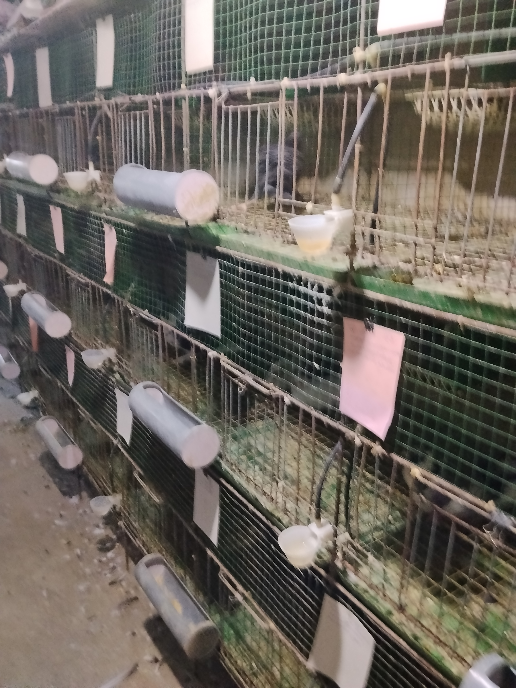
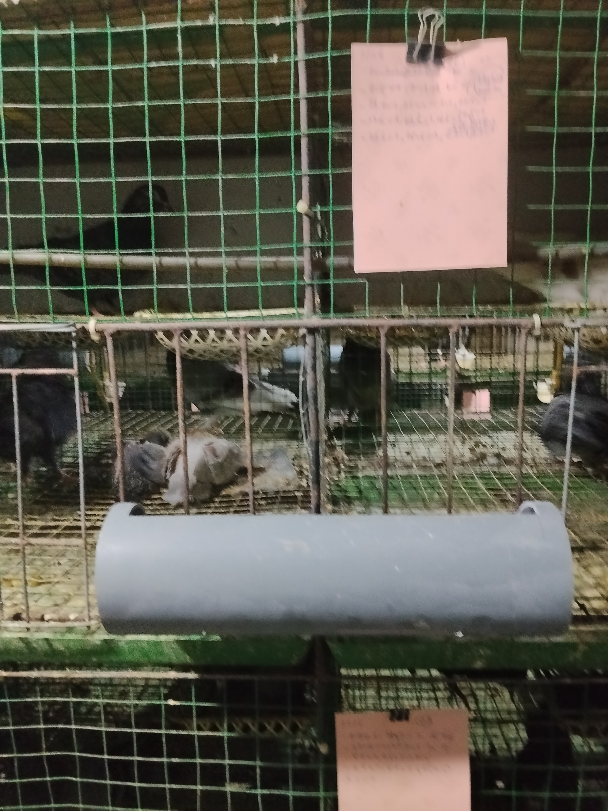
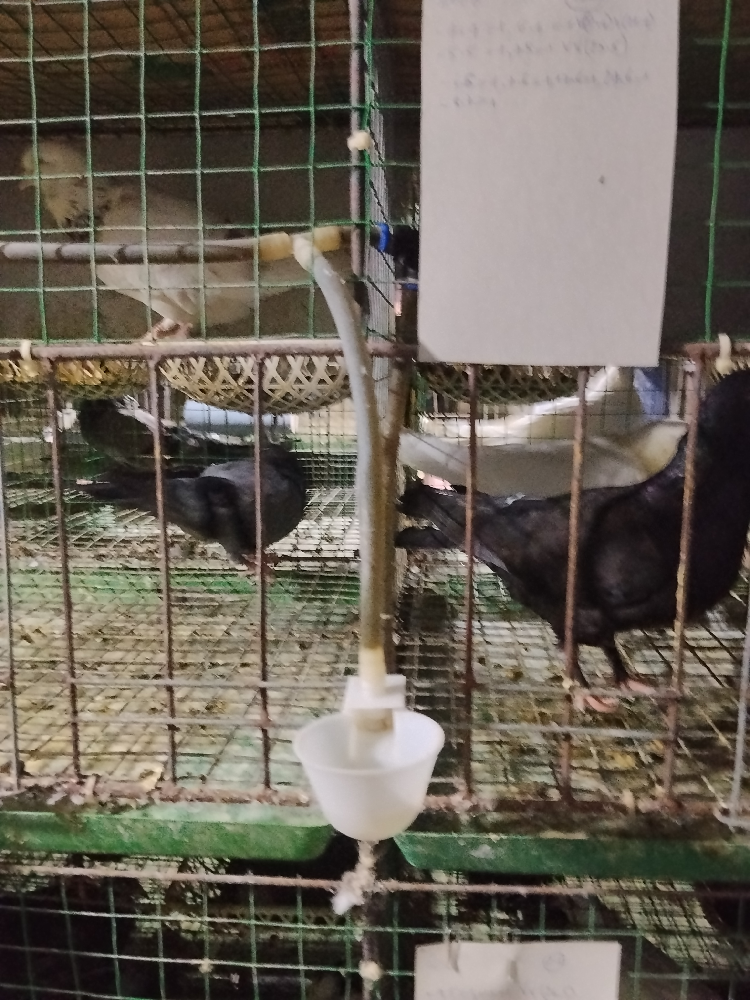
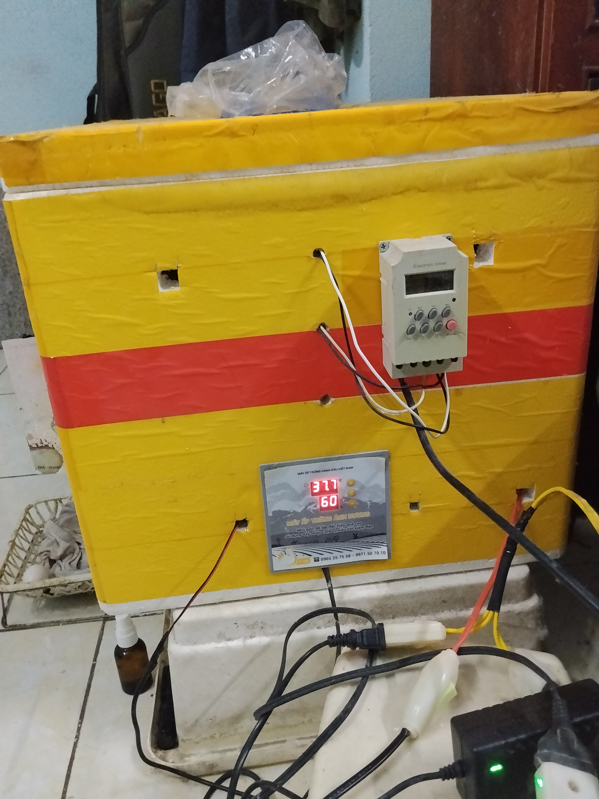
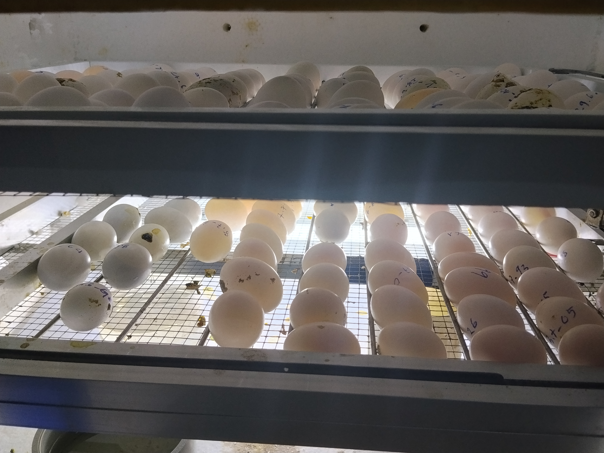

(Nơi giao lưu, chia sẻ kỹ thuật nuôi bồ câu Pháp và cập nhật hoạt động của trại)
Kỹ thuật nuôi chim bồ câu Pháp nhốt chuồng đòi hỏi sự kết hợp chặt chẽ giữa chọn giống, thiết kế chuồng trại kiên cố, chế độ dinh dưỡng chuyên biệt, chăm sóc sinh sản và phòng bệnh nghiêm ngặt để tối ưu hóa năng suất sinh sản và chất lượng chim thương phẩm.
Bồ câu pháp có các loại giống như VN2(Mimas), VN3(Titan). Trong hai loại này, nếu như VN2 có đặc điểm đẻ nhiều, thường từ 9-11 lứa/năm, có con từ 12 lứa/năm; thì VN3 tuy số lứa đẻ/năm không bằng nhưng bù lại có thân hình vạm vỡ, sản phẩm chim ra ràng có trọng lượng lớn hơn. Để lựa chọn giống tốt, trước hết phải là con của cặp bố mẹ to khỏe, siêng năng trong ấp trứng và nuôi con. Vì tính năng này con của nó vẫn duy trì gen của bố mẹ. Chọn giống tốt nhất là lúc chim non đã được 3-4 tháng tuổi, bắt đầu có những cử chỉ, hoạt động phân biệt rõ giữa trống và mái. Chọn những con mắt sang, long mượt, năng động. Con mái có đầu nhỏ hơn con trống, có xương chậu rộng hơn; con trống thường có hình vóc to hơn con mái và có biểu hiện gù ve vãn theo con mái khác.

Kết cấu chuồng nuôi chim bồ câu phápTùy theo điều kiện của mỗi người mà thiết kế chuồng trại sao cho thuận lợi cho mình và tốt cho sự phát triển của chim. Đồng thời thuận lợi cho việc vệ sinh, chăm sóc. Thường người ta chọn hướng đông nam là tốt nhất cho chim để tránh gió lạnh vào mùa đông và mát trong mùa hè. Đặt ở nơi khô ráo, thoáng mát. Mỗi ô chuồng cho 01 cặp sinh sản (1 trống và 1 mái) có kích thước (dài, rộng và cao) khoảng (50 x 50 và 50 cm). Là loài thường năng động nên mỗi ô cần ngăn đôi làm một ô dạng gác lững để cho chim có điều kiện nhảy lên, nhày xuống tập thể dục nhằm tăng cường sức đề kháng cho chim. Kinh nghiệm cho thấy, nếu dùng lưới bọc nhựa hoặc sắt 3-4ly bố trí theo chiều dọc thì ít bị phân bám và chuồng nuôi sạch sẽ hơn các vật liệu khác. Việc chọn lựa, bố trí máng ăn, máng uống, cốc đựng muối, khoáng chất và rổ đẻ cũng cần chú ý để dễ dàng trong việc vệ sinh và phù hợp với điều kiện có sẵn của mỗi người. Máng ăn như thế nào để thói quen xáo trộn của chim ít bị vơi vải thức ăn và chim có thể tiếp cận dễ dàng, nên bố trí loại thành máng có độ cong lõm và độ sâu vừa phải. Máng uống nên chọn loại cốc chuyên dụng để bắt nước cấp tự động. Máng ăn và uống nên bố trí mỗi cái cho 2 ô chuồng. Rổ đẻ và ấp trứng nên để trên ngăn gác lững. Điều đáng chú ý là, các dụng cụ này nên chọn đồ bằng nhựa thì sạch sẽ hơn và khâu làm vệ sinh cũng dễ dàng.

Máng ăn cho chim
Máng nước cho chimĐây là khâu quan trọng để cho chim có đủ chất phát triển. Thành phần chính là ngũ cốc (gạo lức, bắp, lúa mì, các loại đậu: đậu nành, đậu xanh, đậu hà lan), chất đạm, chất xơ, khoáng chất, can xi … Thường thì các trại nuôi chim sử dụng khoảng 60-70% cám tổng hợp cho gà, vịt đẻ, còn lại là tùy điều kiện có sẵn hoặc giá cả của từng loại mà chọn gạo lức, lúa mì hay cám bắp, cám gạo và chừng 5-7% các loại đậu. Điều quan trọng là luôn luôn theo dõi sự phát triển và tính năng động, sinh đẻ, ấp trứng của chim mà gia giảm các thành phần cho phù hợp.
Chim bồ câu pháp đẻ mỗi lứa 2 quả trứng, cách từ 30-37 ngày đẻ lứa tiếp theo, nếu chăm sóc tốt có thể dưới 30 ngày. Trong quá trình chim ấp trứng hay cho chim ấp bằng trứng giả và dùng máy để ấp cũng đều luôn luôn soi trứng để kịp thời loại trứng chết phôi, trứng ung, trứng không có cồ. Trứng chim bồ câu pháp ấp khoảng 17-18 ngày thì nở. Khi chim mới nở, chỉ có chim bố mẹ mới chăm sóc được chim non, vì chúng dùng sữa diều để móm cho chim non nhất là trong 7-10 ngày đầu. Khi chim đang nuôi con, tính thời gian đẻ lứa trước đã được 28-30 ngày thì chuyển chim non xuống tầng dưới và thay lót ổ để chim mái đẻ lứa tiếp theo. Thực tế cho thấy, nếu để chim tự ấp, tỷ lệ nở chưa được 50%. Còn sử dụng ấp nhân tạo, ấp bằng máy tỷ lệ nở cao hơn, tầm 75%. Nếu chim phát triển tốt và thường xuyên theo dõi nhiệt độ và độ ẩm thích hợp có thể hơn 80%. Việc ấp nhân tạo có thể sử dụng máy ấp hay dụng cụ ấp tương tự. Để tỷ lệ nở đạt cần duy trì liên tục với nhiệt độ 37,5-37,7 độ C, độ ẩm 60-65%. Ngoài ra, ít nhất mỗi ngày 1 lần lấy trứng mới đẻ và thay vào đó trứng giả cho chim ấp và mỗi ngày từ 1 đến 2 lần lấy chim non mới nở cho chim bố mẹ úm ngay (tuyệt đối không để chim để nở quá 24 giờ mà chưa đem cho chim bố mẹ úm). Do đó, ở mỗi ô nuôi 01 cặp chim đẻ cần thiết phải có bản ghi cụ thể như: ngày chim đẻ (lấy trứng thật đem ấp và thay trứng giả vào), ngày thay trứng giả bằng chim non mới nở cho chim bố mẹ úm nuôi. Điểm đáng chú ý là tính từ ngày chim đẻ đến ngày đem chim non mới nở cho chim bố mẹ úm nuôi nằm trong khoảng 16-19 ngày. Vì nếu sớm quá, chim bố mẹ chưa đủ tiết sửa diều và muộn quá thì chim bố mẹ bỏ ấp, cũng đồng nghĩa không nuôi con.

Máy ấp trứng nhìn từ bên ngoàiThực tế cho thấy cách phòng bệnh tốt nhất trước hết là môi trường, không gian nuôi thoáng mát và sạch sẻ. Ngoài chuồng, trại lồng nuôi như đã đề cập ở trên, cần chú ý một số điểm như: Phân chim không để phân hủy trong khu vực nuôi, ít nhất phải dọn sạch mỗi tuần 1 lần; việc dùng máng hứng phân bằng nhựa là cần thiết và triệt để trong khâu này. Tiếp đến là tuyệt đối không cho ăn thức ăn đã bị nấm mốc, ối. Máng uống phải sạch sẽ, chim tuyệt đối được uống nước sạch. Do đó, dù dùng máng uống cho chim loại nào cũng phải rửa sạch ít nhất 2-3 ngày một lần. Thường xuyên bổ sung AD3E và men tiêu hóa cho chim. Thực hiện tốt các nội dung trên, cộng với bản năng chịu đựng tốt vốn có của loài chim bồ câu pháp thì hoàn toàn không cần dùng đến vắc xin hay kháng sinh trong quá trình nuôi chim.

Trứng đặt ở các ngăn ấp bên trong